Open source under AGPL-3.0. Self-hosted.
Nutreek
A self-hosted weekly nutrition planner — plan meals, track macros, and let adaptive TDEE keep your targets honest.
This week
One page a day. The tabs on the edge go straight to one.
What it is
Nutreek is a self-hosted web app for your weekly nutrition plan. You build a week of meals from ingredients and recipes, and it computes the macros — calories, protein, carbohydrates and fat — per meal, per day and per week, with adherence bars against your targets.
Ingredient data comes from a local OpenFoodFacts index — full-text search in under 50 ms, offline — so lookups stay fast and private. On your phone, point the camera at a barcode and the product opens ready to add.
It runs natively as a single Go binary, or as one Docker container. SQLite is embedded, so there is no separate database to operate. The interface is in English and Italian, in light and dark, and installs on a phone like an app.
MondayThe week, one day at a time
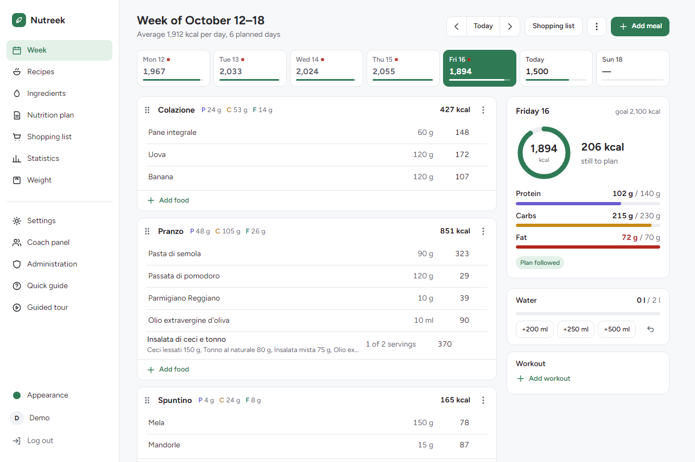
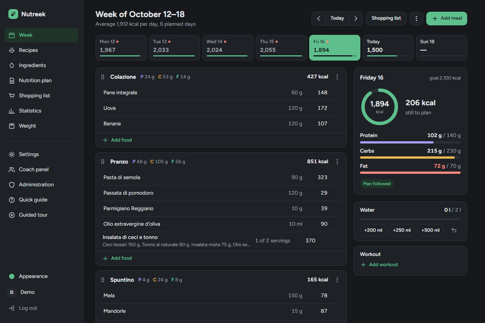
Features
- Weekly plansA calorie ring and macros per meal, day and week, water and workouts, cheat meals, and one-click copy from the previous week.
- IngredientsLocal full-text search over OpenFoodFacts, offline, with product photos, kept in sync by a reconciliation job.
- Barcode scannerScan a pack from any food picker: your own ingredients first, then the local OpenFoodFacts copy.
- On your phoneInstalls as an app, with a bottom bar. Light, dark or system, in four colours.
- Recipes and templatesRecipes from ingredients, imported from a URL (schema.org/Recipe), and weekly templates applied in one click.
More features
- Auto plan generatorA greedy planner builds a whole week from meal variants to hit your macro targets.
- Adaptive TDEEEstimates your real energy needs from your weight and intake trend, and suggests target updates.
- Weight, hydration, workoutsDaily tracking with trend charts, a workout log with calories burned and a weekly dashboard.
- Coach modeA plan library, client assignment, frozen plan history and a coach dashboard.
- Shopping list and REST APIThe week's shopping grouped by aisle, with a cart and a two-column print, and a bearer-token REST API.
A closer look
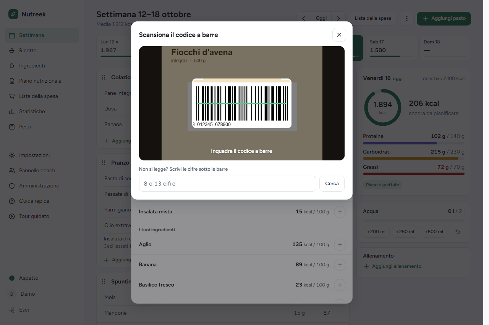
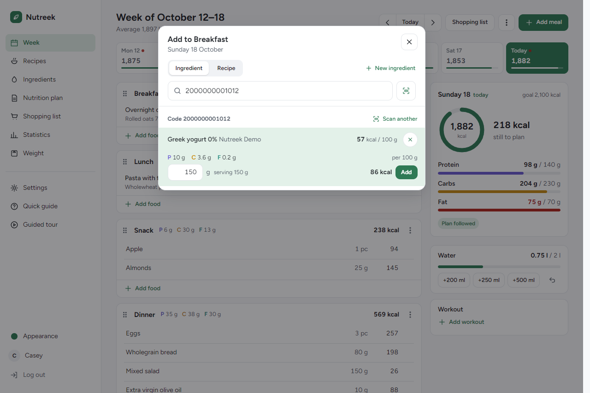
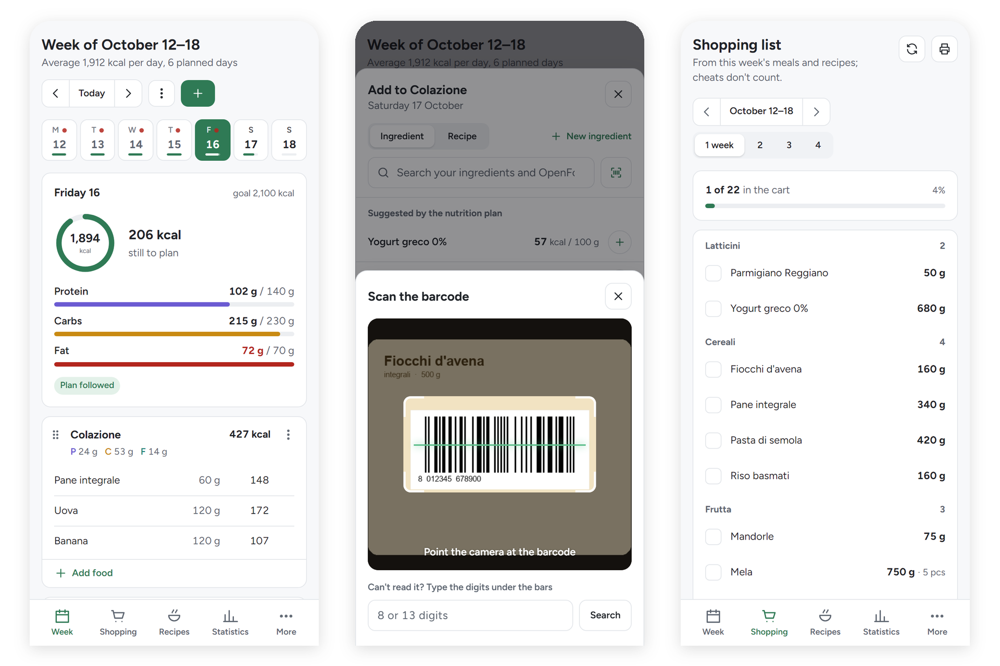
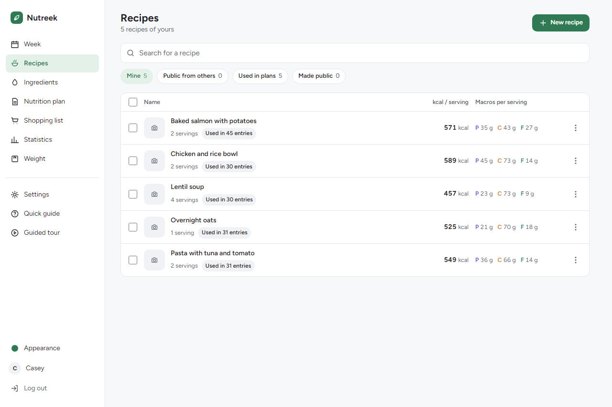
Planning ahead
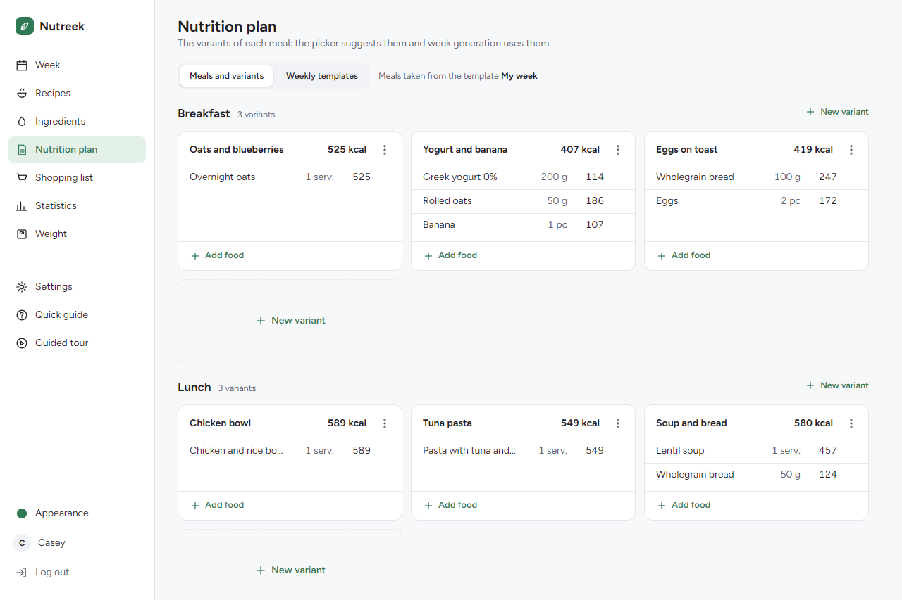
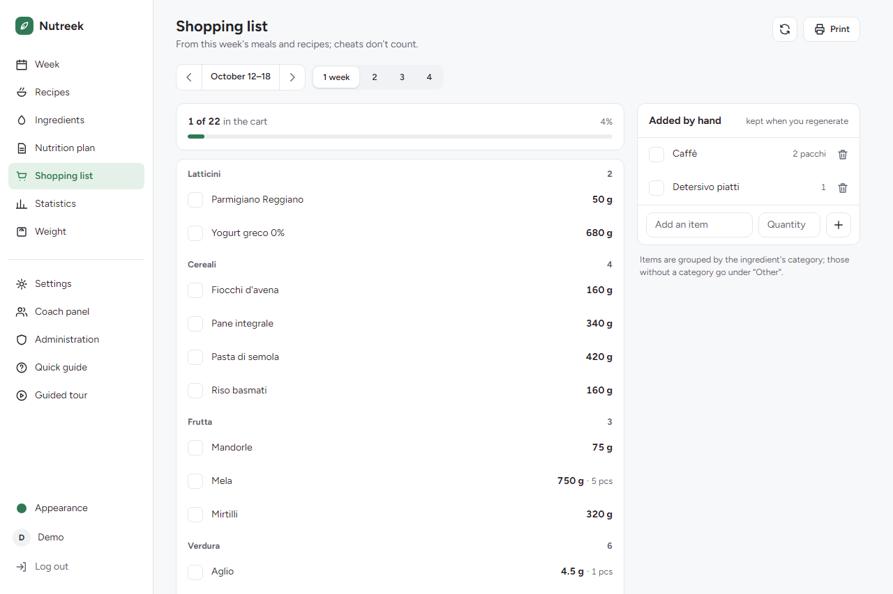
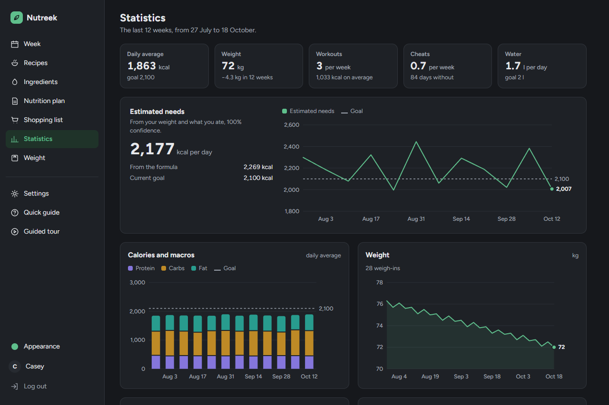
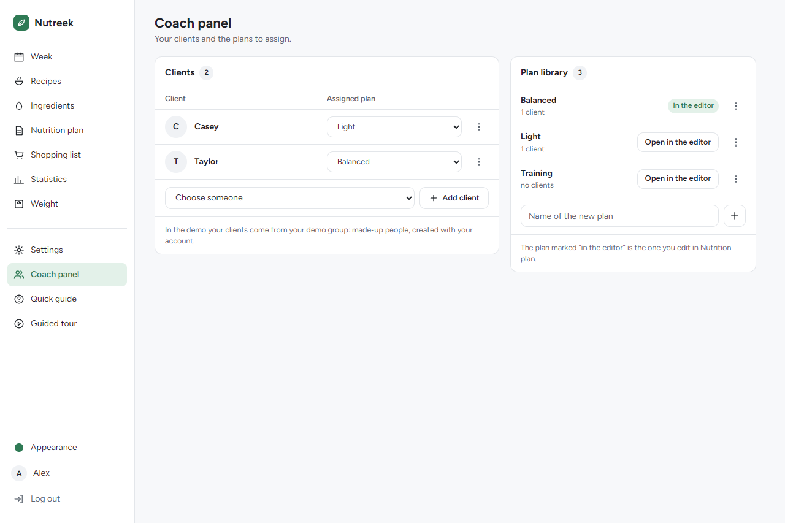
Under the hood
| Backend | Go 1.27+ (chi, scs, goose, bcrypt, nosurf), hand-written SQL |
|---|---|
| Database | SQLite via modernc.org/sqlite — pure Go, no CGO |
| Frontend | html/template + HTMX + Tailwind CSS; installable as a PWA |
| Deploy | Static binary or a distroless Docker image (~20 MB), health-checked |
| Your data | One SQLite file, with optional scheduled backups and retention |
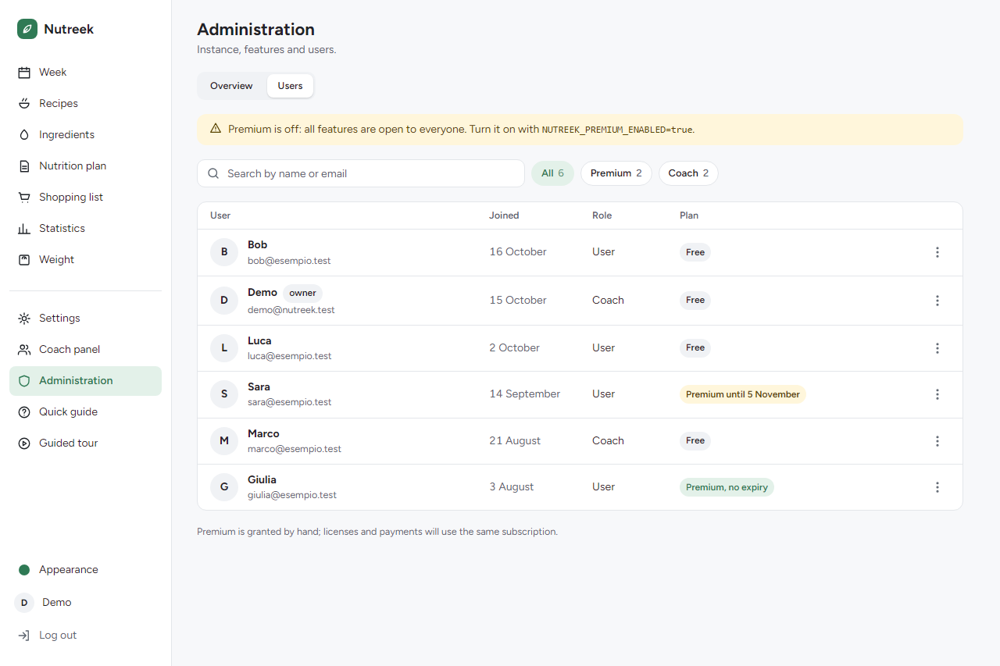
Updating stays in your hands. Once a day a running copy checks GitHub for a newer release and tells its owner, with the two commands to update; a page left open across an update offers to reload.
Want to look first? The live demo gives you a throwaway account with twelve weeks of made-up meals, as yourself, a coach or a coach's client. No sign-up; it is deleted after two hours without use.
If it's useful to you, a donation genuinely helps.
Open the demo Source code Donate
NotesThat's the week.